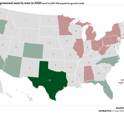
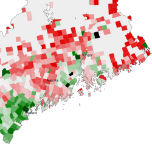

Hello. I'm a journalist, statistician, programmer and freelance cartographer. I'm particularly interested in history, geography, literature, climate advocacy, and egalitarian urban design (especially affordable housing).
I'm currently available on a very limited basis for freelance commissions – especially if you've got a fun and interesting project.
These are some of the things I've made in the past:
Work from my current day job.
A 4-part series about the Los Angeles River and efforts to restore its ecosystem with new parks and sustainable urban redevelopment. Published July and August 2012: part 1, part 2, part 3, and part 4.
A cookbook review and animated emoji illustration for the Portland Press Herald food section in July 2015.
Broadcast on Maine Public radio's "Maine Things Considered," December 2011. Download the MP3 (essay begins at 16:52)
A story about new wetland ecosystems growing in abandoned backyard pools in the aftermath of California's foreclosure crisis (published in the November/December 2009 issue).
A story about the Bayside Glacier, a massive "snow dump" in downtown Portland, Maine. Published April 9, 2008.
Published in 2011, with design consultation from Sean Wilkinson of Might & Main. Order a copy online from the Bike Coalition of Maine (which also receives a portion of net revenues from map sales); you can also find it at any Portland bookseller or bike shop.
Second edition coming Spring 2017!
Interactive map: as rainfall lags, watch drought spread across New England
Play the congressional apportionment game
Interactive map: population change in Maine towns, 2010-2015 (D3 map with scroll-based navigation)
I've served on the Board of Commissioners since April 2012, and was the board's chair from July 2014 to July 2016. During that time, our component development corporation broke ground on the new Bayside Anchor building, a 44-unit mixed-income, mixed-use and passive house-certified structure that's scheduled to open in November 2016.
the Conservation Law Foundation, GrowSmart Maine (my employer from 2006-2009), Maine Public Broadcasting, Grist.org, Workshop Houston, and SPACE Gallery.